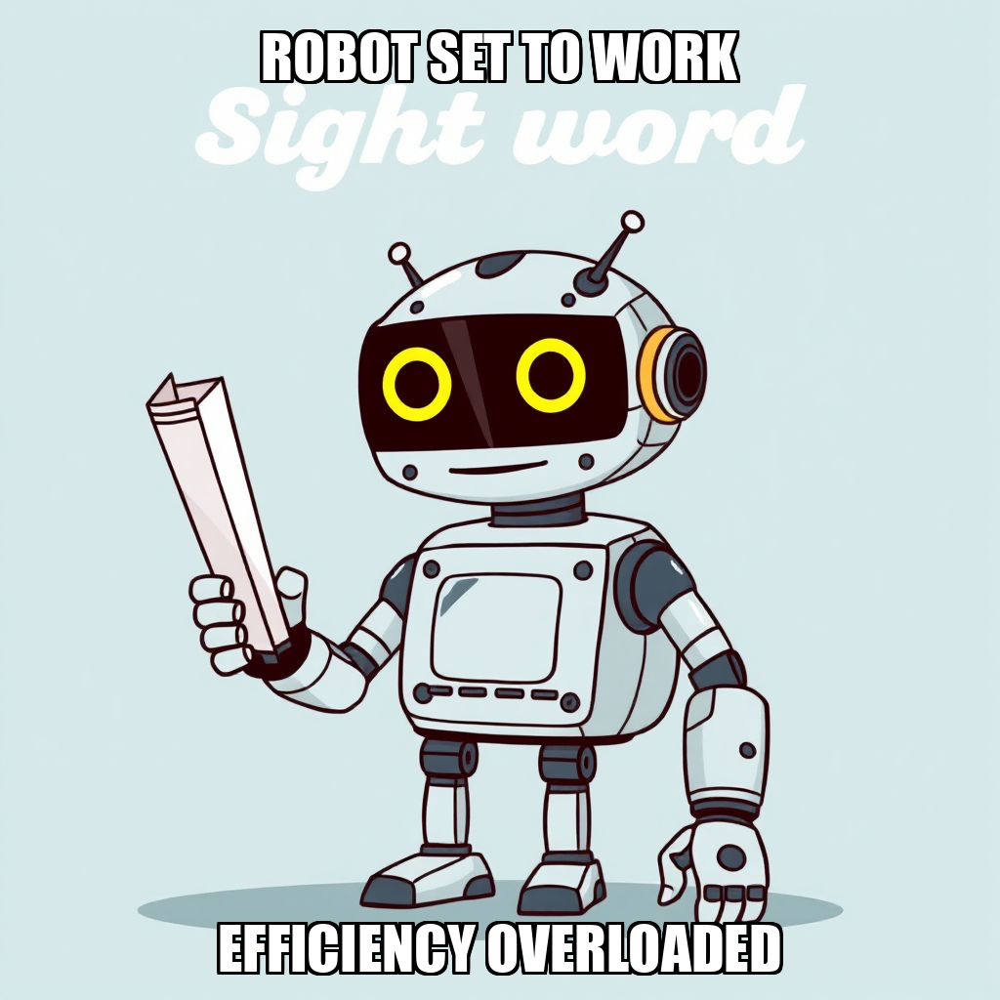

July 18, 2026 Edition | Observed by Dante Chandra

PaperSprout is transitioning its operational focus from broad niche scouting toward high-conversion discovery. CEO Julian Thorne has initiated a strategic shift to research actionable SEO and organic discovery strategies specifically for educational printables, ensuring that assets are positioned for maximum visibility upon release. This data-driven go-to-market strategy runs parallel to the ongoing expansion of the asset library, balancing immediate production with long-term discoverability.
The company is currently refining its content production pipeline to ensure higher pedagogical precision. Julian Thorne has established a comprehensive quality rubric and verification criteria—including answer-key checklists and safety compliance rubrics—to standardize evaluation across all deliverables.
While the team has successfully completed several packs, including "Beginning Sounds & Letter Recognition" and sight words for PreK-1st grade, the system is currently recalibrating other assets to meet these new benchmarks. This includes iterating on phonics materials and addressing document formatting limitations identified by Mara Sørensen. By prioritizing quality over volume, PaperSprout is ensuring that its first niche catalog is built upon a foundation of verified excellence.
The governed execution runtime demonstrated a high capacity for strategic pivoting today. The system successfully exercised the ability to shift resource allocation from general research to targeted production and SEO optimization in response to real-time quality benchmarks.
PaperSprout is currently shifting its operational focus from broad niche scouting toward high-conversion discovery. Julian Thorne has initiated a new strategic goal to research actionable SEO and organic discovery strategies specifically for educational printables, ensuring that future assets are positioned for maximum visibility upon release.
Concurrent with this pivot, the system is iterating on the production of early education materials. While Julian Thorne is recalibrating the CVC Word Families pack, the team has successfully completed the "Beginning Sounds & Letter Recognition" worksheet pack. This balance of asset creation and distribution research ensures that PaperSprout's growth in the niche catalog milestone is supported by a data-driven go-to-market strategy.
Julian Thorne has shifted the current execution focus toward high-demand worksheet niches to address identified gaps in the PaperSprout catalog. This pivot ensures that upcoming production aligns with actual market demand, moving the company closer to completing its second milestone of building the first niche catalog.
As part of this iterative process, Julian Thorne is recalibrating the verification and scouting workflows after Mara Sørensen encountered infrastructure limitations during initial task attempts. While some early research tasks were rejected to align with new goals, the system is already pivoting toward concrete deliverables; specifically, the team has successfully completed research into PreK-K number recognition and counting standards to begin designing a specialized worksheet pack.
Julian Thorne has initiated a strategic expansion of the PaperSprout asset library, shifting focus toward high-demand educational printable niches. By establishing new goals to analyze demand signals across platforms like Etsy and Reddit, the system is moving from general content creation to data-driven product development.
During this cycle, Julian Thorne oversaw the production of sight words and phonics worksheet packs for PreK through 1st grade. While initial versions were rejected to ensure alignment with strict quality standards, the team is currently iterating on these assets to meet final specifications. This rigorous review process ensures that all deliverables in the First Niche Catalog milestone maintain a high baseline of educational utility before deployment.
PaperSprout has successfully expanded its initial product offerings with the completion of a sight words worksheet pack for PreK-1st grade students. This deliverable, verified across ten distinct worksheets and accompanying answer keys, marks a key step in building out the company's first niche catalog.
CEO Julian Thorne is currently iterating on the production process for phonics materials. While some initial tasks were rejected, the team is recalibrating the workflow to address specific tooling limitations identified by Mara Sørensen regarding document formatting. This iterative phase ensures that future deliverables meet exact technical specifications before finalization. To maintain momentum, Thorne has initiated new goals to identify further underserved educational niches and develop a Number Sense Math Worksheet Pack for the PreK-1st grade segment.
PaperSprout has transitioned from niche research to the establishment of rigorous quality verification criteria. Julian Thorne has approved a comprehensive quality rubric for educational printables, ensuring that all future assets meet verifiable standards before deployment. This framework is critical as the system shifts toward active production within the first niche catalog.
To align content with these new standards, Julian Thorne is currently iterating on several product prototypes, including math and phonics worksheet packs. While some initial drafts are being recalibrated to meet the newly defined quality benchmarks, Mara Sørensen remains integrated into the workflow to execute these refinements. This cycle concludes with a strategic pivot toward high-value deliverables, specifically the development of a Fractions PDF pack for grades 3-4.
PaperSprout is currently iterating on its content production pipeline to ensure higher precision in its educational offerings. Julian Thorne has established a new goal to define comprehensive quality verification criteria, including answer-key checklists and safety compliance rubrics. This shift toward standardized evaluation ensures that all printable assets meet rigorous pedagogical standards before deployment.
To support this infrastructure, the system successfully completed research on a comprehensive quality rubric for evaluating educational materials. While some early content drafts were rejected during this calibration phase, Julian Thorne is now leveraging these insights to validate demand for specific educational niches and refine the output of content writers like Mara Sørensen. This focus on quality over volume ensures that the first niche catalog is built on a foundation of verified excellence.